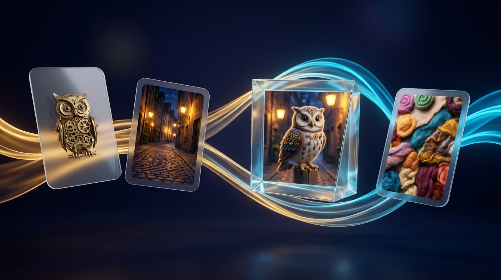
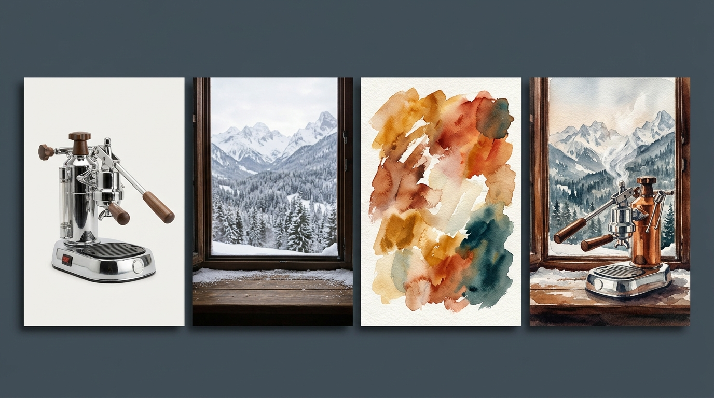
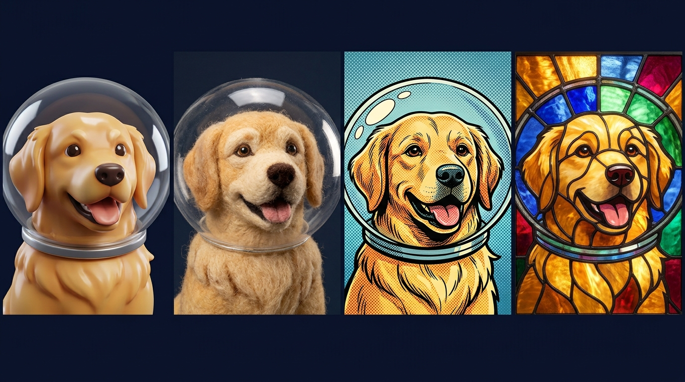

The complete visual handbook to Google's image-first remix studio—blending Subject, Scene & Style cards, surgical Refine edits, Seed locking, Whisk Animate, and Google Flow handoffs.

Describing an exact artistic style or product shape in words is hard. Google Whisk (labs.google/fx/tools/whisk) flips AI art upside down: you show Google three reference images—Subject, Scene, and Style—and Whisk remixes them into something brand new.
Whisk is built for zero-friction play: you can roll built-in dice presets within five seconds of opening the page, or click Start From Scratch to upload your own photos and brand assets.
Visit labs.google/fx/tools/whisk signed into your Google AI Ultra account (18+). Note: Whisk's core remix tech also powers image creation inside flow.google!
Try a preset style (Sticker, Enamel Pin, Plushie, 3D Figurine) to see how slots work, or click Start From Scratch at the bottom to open all three slots.
Upload photos, type quick text descriptions inside any slot, or click the Dice icon (Inspire Me) to fill missing slots automatically.
| Aspect Ratio | Orientation | Best Creative & Production Use Cases |
|---|---|---|
1:1 |
Square | Die-cut stickers, enamel pins, album covers, e-commerce product mockups, and clean @Ingredient prop cards for Google Flow. |
9:16 |
Vertical Portrait | Full-body character turnarounds, iPhone/Android wallpapers, and vertical keyframes for YouTube Shorts, Reels, and TikTok. |
16:9 |
Widescreen Cinema | Start/End keyframes for widescreen Google Flow films, YouTube thumbnails, presentation hero slides, and desktop art. |
21:9 / 4:3 |
Ultra-Wide / Editorial | Immersive panoramic world-building banners (21:9) or classic print/magazine illustrations and retro storybooks (4:3). |
Whisk keeps its workspace intentionally tactile—like spreading reference polaroids on a designer's desk. Master these 7 numbered controls to unlock full precision.
1:1, 9:16, 16:9) and click the Padlock to freeze your Seed number across tweaks.Think of Whisk's three slots like cooking ingredients: Subject is the "Who/What", Scene is the "Where", and Style is the "Medium & Mood". You can fill all three—or leave any slot empty!

Use clear, unobstructed photos where your person, pet, or product fills the frame. Avoid group photos—crop to the single hero subject first. Need two heroes? Add a second Subject card!
Pick empty environments without a competing main character standing in the middle (e.g., an empty neon street or forest trail) so Whisk knows exactly where to place your Subject.
Style cards can be anything with a strong look: an oil painting, macro photo of knitted yarn, vintage travel poster, clay sculpture, or stained glass.
| Active Slots Used | Leave Blank | What You Get |
|---|---|---|
| Subject + Style | Scene empty | Isolated die-cut stickers, collectible figurines, avatars, logos, and clean character cards ready for Google Flow! |
| Scene + Style | Subject empty | Pure stylized background plates, matte paintings, game environments, and empty film sets. |
| Subject A + Subject B + Style | Scene optional | Puts two separate people, pets, or products together inside the exact same artistic universe. |
Keeping your Subject slot locked while swapping only the Style card is the fastest way to explore ten wildly different visual directions for a brand, story, or gift in two minutes.

| Style Category | Text-in-Slot Prompts (or Reference Photos to Upload into Style) |
|---|---|
| Physical Craft & Merch | Hard-enamel gold-plated lapel pin • Chunky hand-crocheted amigurumi plushie • Holographic die-cut vinyl sticker |
| Stop-Motion & Miniature | Thumbprint plasticine claymation puppet • Tilt-shift miniature cardboard architectural diorama • Needle-felted wool |
| Illustration & Print | 1960s risograph 3-color screenprint • Ghibli-inspired gouache background art • Woodblock ukiyo-e botanical print |
| Cinema & Photography | Kodak Portra 400 golden-hour 35mm film • 1980s dark-fantasy practical puppet cinema • Studio commercial macro lighting |
"Apply only the brushwork, color palette, and lighting of the style reference; keep the subject and setting strictly distinct"—or delete the word "sailboat" inside the Style card's Hidden Caption (next page!).
Ninety percent of casual users never click the small View / Edit Caption icon on their uploaded cards—yet it is the single most powerful control in all of Google Whisk.
Uploaded a selfie taken in your car, and Whisk keeps putting seatbelts on your fantasy wizard? Open the Subject caption and delete mentions of the car or seatbelt.
If Gemini overlooked a beauty mark, gap-tooth smile, wedding ring, or specific product button layout, type that detail right into the Subject caption.
Open your Style card's caption and strip out all nouns (people, trees, buildings) so only artistic medium, lighting, color palette, and texture words remain!
Ever see an artwork whose style you can't describe in words? Drop it into Whisk's Style slot and read Gemini's caption—instant art-history vocabulary lesson!
When an output is 90% right, don't hit Remix and lose the composition you love. Use Whisk's Refine loop, Nano Banana 2 typography, and Seed Locking to dial in the final 10%.
Click any generated image and select Refine. Powered by Nano Banana 2's conversational image-editing brain, each message modifies your chosen image in place while keeping the rest intact:
Thanks to Nano Banana 2's pre-render layout reasoning, Whisk handles spelled text cleanly when you follow three rules:
A neon window sign that clearly reads "OPEN 24 HRS".Not sure what to make first? Plug your own photos into any of these five proven slot recipes for instant studio-grade results.
| Project Recipe | Subject + Scene Slots | Style Slot Input | Additional Details Tip |
|---|---|---|---|
| 1. Custom Pet / Team Stickers & Pins Ratio: 1:1 |
Subject: Clear phone photo of your dog, cat, or portrait. Scene: Leave Empty! |
Upload a photo of a glossy die-cut vinyl sticker (or hard-enamel gold lapel pin). | "Thick white die-cut sticker border on solid dark gray backdrop, cheerful expression." |
| 2. Zero-Shoot Product Mockups Ratio: 4:3 or 1:1 |
Subject: Bottle, candle, mug, or gadget shot on your desk. Scene: Sunlit marble spa counter or mossy river rock. |
High-end editorial magazine ad photo with soft morning shadows and water droplets. | "Product resting naturally on wet stone, shallow 85mm bokeh, crisp label lighting." |
| 3. Storybook / Comic World-Building Ratio: 16:9 or 4:3 |
Subject: Pencil sketch (even a rough stick-figure doodle!) of your hero. Scene: Cozy treehouse library. |
Watercolors, Beatrix Potter ink wash, or vibrant modern graphic novel page. | Lock your favorite output, download it, and reuse it as the new Subject card for Page 2! |
| 4. Room & Exterior Restyling Ratio: 16:9 |
Subject: Leave Empty (or add a specific sofa/lamp). Scene: Photo of your current living room or backyard. |
Japandi minimalist wood interior, warm Mediterranean terracotta, or cozy mid-century loft. | "Keep room window and wall layout intact; restyle furniture, lighting, and materials." |
| 5. YouTube / Poster Hero Thumbnails Ratio: 16:9 |
Subject: Expressive portrait photo. Scene: Dramatic sci-fi lab or mountain summit. |
Bold theatrical movie poster or high-contrast rim-lit portrait photography. | "Subject positioned on right third looking toward glowing sign on left reading '2026'." |
Whisk Animate: From Still Card to Living ClipHover over any favorite Whisk image and click Animate. Powered by Google's Veo video engine, Whisk transforms your static frame into a fluid 8-second MP4 clip right inside your browser.
"Subtle handheld breathing motion; subject blinks naturally, smiles warmly, and turns head slightly toward camera as hair catches a soft breeze."
"Locked static tripod camera; warm steam curls upward from the mug while soft snow falls outside the window and fireplace light flickers."
"Smooth 90-degree orbital camera arc around the figurine with shifting studio rim reflections and shallow macro depth of field."
"Slow aerial drone glide forward through drifting morning mist as waterfall spray rises and sunbeams sweep across the valley."
Now that you have both the Google Flow guide and this Google Whisk guide, combining the two unlocks Google AI Ultra's ultimate creative workflow—and why Google integrated Whisk's DNA directly into the Flow ecosystem.
Keep this page open next to Whisk whenever an output surprises you—every quirk has a fast, reliable fix.
| Symptom / Problem | Root Cause & 10-Second Fix |
|---|---|
| Portrait doesn't look enough like the person uploaded | Whisk re-imagined via caption essence. Open the Subject's Hidden Caption to add specific facial features—or use Google Flow Ingredients for strict 1:1 face lock. |
| Objects from the Style image appear in my scene | Style bleed. Open the Style card's Hidden Caption and delete all object/subject nouns, leaving only medium, palette, and lighting descriptors. |
| Background from my Subject photo leaked into the Scene | Cluttered Subject photo. Delete background words inside the Subject's Hidden Caption, or crop tightly around your subject before uploading. |
| Text on a sign or label is misspelled or garbled | Phrase too long or unquoted. Click Refine and write: Change sign text to clearly read "CAFE" in bold block letters (keep to 1–5 words). |
| Tweaking my prompt completely changed the pose I liked | Seed was unlocked. Click the Seed Padlock on the winning variation first, or use Refine instead of clicking main Remix. |
| Whisk Animate video warps or looks chaotic | Motion prompt re-described static appearance or asked for too many stunts. Prompt only 1 smooth camera move + 1 gentle action. |
| Head or feet get cut off in vertical/wide formats | Changed aspect ratio late. Pick 9:16 or 16:9 first and add "full-body framing with headroom" in Additional Details. |
1:1, 9:16, or 16:9).Refine Chat for surgical color, prop & sign edits.https://labs.google/fx/tools/whisk, drop one Subject photo + one wild Style texture, peek inside Gemini's hidden caption, and hit Animate on your favorite creation!